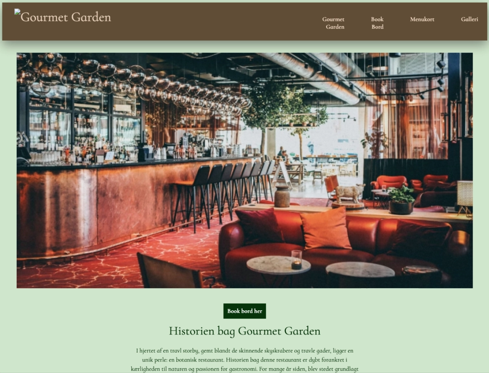

Grundlæggende UX/UI
I dette forløb fik vi stillet til opgave at udarbejde en hjemmeside med et selvvalgt emne. Formålet var at lære om UX/UI-metoder, samt om designprocessen og formidling af bla. research- og testresultater. Jeg startede med finde inspiration, primært med desktop research, derefter udarbejdede jeg et moodboard, og styletile.
Jeg lavede både wireframe og layout diagrammer. Dette layout diagram ses hvordan jeg original havde tænkt at forsiden skulle se ud. Da jeg havde lavet min prototype og skulle til at teste siden fandt jeg frem til at de 3 billeder ikke fungerede. Det fandt jeg ud af bla andet gennem tænke -højt testen, og 5 sec test. Derfor valgte jeg at ændre forsiden så der kun var et stort billede.
I dette tema lærte vi Figma og Figjam rigtigt at kende. Jeg udarbejdede en prototype sådan som jeg ville have hjemmesiden skulle se ud. Jeg fandt ud af det Figma er et rigtig godt designredskab til at se ens ideer og design inden man begynder at kode.